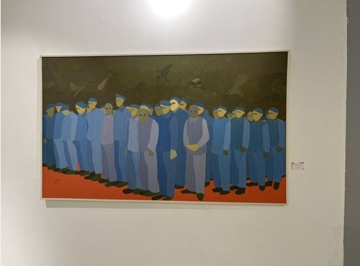

35 Years and Many Questions
This text looks at thirty five years of the Youth Salon (35th edition) reflecting on the last five years and how, despite stifling political and creative constraints, certain genres and formats finally witnessed an artistic breakthrough.
